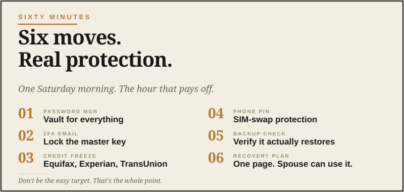
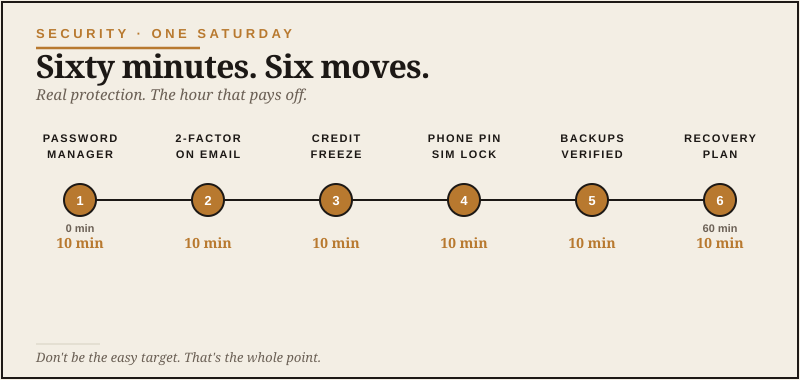

Let me be honest about something. Nobody enjoys this work. It’s the digital equivalent of cleaning the gutters — boring, slightly tedious, and the only people who get excited about it are the people who’ve already lost something to neglecting it. But boring maintenance is still maintenance. The house does not care that you weren’t in the mood.
But here’s the thing nobody tells you in plain language: your email account is now more valuable than your wallet. If somebody walks off with your wallet, you cancel a few cards and replace a license. If somebody gets into your email, they can reset the password on your bank, your investments, your kid’s tuition portal, your work accounts, your cloud backups, and the dozen other things you’ve quietly tied to that one inbox over the last fifteen years.
I’m not saying that to scare you. I’m saying it because most guys our age set up their email when AOL was still a thing and haven’t really looked at the security settings since. The world changed. The defaults didn’t. That sentence applies to a depressing number of things, by the way.
This guide is one hour. Six moves. By the end of it, you’ll be a meaningfully harder target than you were this morning. That’s the whole goal.
Move one: Lock down your email like the master key it is
Start here, before anything else. If you do nothing else on this list, do this.
Open your primary email account — the one that gets the password reset codes for everything else. Go into the settings and look for security or account protection. You’re checking three things:
- Is your password unique? Meaning, you don’t use it anywhere else. If you do, change it now. The password manager move (next section) makes this easy.
- Is two-factor authentication on? This is the single most important security setting on the internet. It’s the “send a code to my phone before letting somebody log in” feature. Turn it on if it isn’t already.
- Are your recovery options current? Backup phone, backup email — make sure those still belong to you and aren’t pointing at an old number or an inbox you abandoned.
While you’re in there, look at the list of trusted devices and recent login activity. If you see an old phone, an old laptop, or anything that doesn’t look familiar — kick it out. Some of those entries are probably eight years old. They don’t need access anymore.
That’s 15 minutes. The most valuable 15 minutes you’ll spend today.
Move two: Get a password manager and stop pretending
Here’s a confession I’ll bet ninety percent of grown men share: you reuse passwords. Maybe with a number on the end. Maybe with a capital letter swapped in. But you reuse them, because remembering forty unique strong passwords is genuinely impossible.
That’s not a character flaw. That’s just math. The human brain wasn’t designed for this.
The fix is a password manager. Pick one of these three:
- 1Password — the polished one. Costs about $36 a year. Works everywhere. This is what I’d hand to my dad.
- Bitwarden — free for the basics, $10 a year for the upgrade. Open source if that matters to you. Slightly less pretty, equally solid.
- Apple Passwords — built into your iPhone and Mac if you’re an Apple guy. Free. Less full-featured than the other two, but if your whole life is in the Apple ecosystem, it’s a perfectly good answer.
You memorize one strong master password. The manager handles the rest. When you log into a site, it fills the password for you. When you create a new account, it generates a unique password and saves it.
That’s it. That’s the trick. The whole modern security industry is built around the fact that this one tool fixes most of the problems most people have.
Don’t spend a week researching which one is best. Pick one. Spend 20 minutes installing it on your phone and computer and importing your existing passwords. You can fine-tune later. The perfect password manager you never install protects exactly nothing.
Move three: Two-factor on the accounts that can hurt you
You don’t need to spend the rest of your life adding two-factor to every random account you’ve ever made. The forum where you posted about a Jeep mod in 2014 is fine. Forget it.
You do need it on the accounts that, if compromised, would actually mess up your life:
- Your email (already done in move one)
- Your bank, brokerage, and credit card sites
- Your Apple ID or Google account
- Your phone carrier (this one is sneaky-important — see below)
- Your password manager
- Your cloud storage — iCloud, Google Drive, Dropbox
- Any business or work accounts that handle real money
One thing about phone carriers: there’s an attack called SIM-swapping where somebody talks your carrier into transferring your phone number to their device. Then your text-message codes go to them, not you. Call your carrier and ask them to put a port-out PIN on your account. Takes five minutes. Most people don’t know this exists.
For the two-factor itself, use an authenticator app — Google Authenticator, Authy, or the one built into 1Password — instead of text-message codes when the option exists. Text codes are better than nothing, but they’re the weakest form of two-factor, partly because of the SIM-swap thing above.
Move four: Freeze your credit
This is the move that nobody talks about and almost everyone should do.
If you’re not actively shopping for a mortgage, a car loan, or a new credit card, freeze your credit at the three major bureaus: Equifax, Experian, and TransUnion. Each one takes about five minutes. It’s free.
What does it do? It makes it nearly impossible for somebody to open a new credit account in your name, because lenders can’t pull your credit report without your okay. If your information leaks in a data breach — and it will, eventually, everybody’s does — the freeze is what stops the fraud from getting expensive.
You can unfreeze it temporarily when you actually need to apply for credit. Takes about a minute through their website or app. It’s not dramatic. It’s just the smart default.
Move five: Clean up the sprawl
Open your email inbox and search for the word “verify” or “welcome.” You’ll be amazed at how many accounts you forgot you had. Old fitness app. Random newsletter sign-up. That one website you bought a thing from in 2019.
Each of those is a tiny security risk — a place where your password (probably reused) is sitting on someone else’s server. You don’t need to delete every one of them. But spend ten minutes hitting unsubscribe on the noisy ones and closing the accounts you genuinely don’t use anymore.
While you’re at it, your password manager probably has a feature that flags reused or weak passwords. Run that check. Update the worst offenders first. You don’t have to fix everything in one sitting.
Move six: Write down the recovery plan
Here’s the part most guys mess up. They lock everything down so well that if something happens to them — they’re traveling, they’re sick, they’re hit by a bus, they just can’t get to their phone — nobody can recover anything.
That’s not security. That’s a hostage situation in slow motion.
The fix is simple. Your password manager has a feature called emergency access or family sharing. Set it up with your spouse, your adult kid, or whoever is the trusted person in your life. They can request access in an emergency. There’s usually a waiting period before it kicks in, so it’s not a free-for-all.
Then write a one-page document — paper, in a safe place — that says: “If something happens, the password manager is the master key. Here’s how to reach it. Here’s who knows the master password if I’m unavailable.” Put it where the right person can find it. Don’t put the actual passwords on the page.
That’s it. You’re done.

The hour, in order
If you want the cheat sheet:
- Lock down email — 15 minutes
- Install a password manager — 20 minutes
- Turn on two-factor for the important accounts — 15 minutes
- Freeze your credit — 5 minutes
- Clean up old accounts — flexible, do what you can
- Set up emergency recovery access — 5 minutes
You won’t be untouchable. Nobody is. But you’ll have moved yourself from the easy-target pile to the hard-target pile, and most online crime is opportunistic. It goes after the easy targets.
That’s the whole point. Don’t be the easy target.